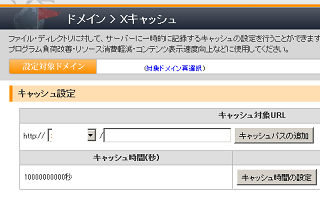
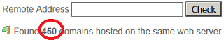
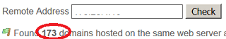
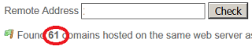
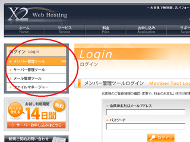
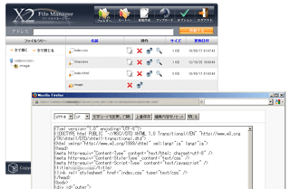

X2（エックスツー）とエックスサーバーを比較
人気の個人向けレンタルサーバーにエックスサーバーがありますが、その上位プランにはX2（エックスツー）もあります。
→ X2（エックスツー）
追記：
こちらの「X2」は「エックスサーバー」に統合されました。
2017年11月30日(木)18時にて新規受付が終了しています。
当サイトはsixcoreを利用してますが、SIXCOREについては主に法人向けという印象があります。そのため、「エックスサーバーとsixcoreの違い」は概ね法人と個人の違いで分かり易いものの、「エックスサーバーとX2の違い」はわかりずらいかもしれません。
- エックスサーバー → マルチドメイン無制限、データベース50個～、月額1,000円～
- X2（エックスツー）→ マルチドメイン無制限、データベース無制限、月額1,800円～
- sixcore → ドメイン数5つまで、月額1,800円～
エックスサーバーもX2も共にマルチドメイン対応で無制限、232Gbpsの高速バックボーンですが、容量についてはエックスサーバーが200GBからに対し、x2は100GBからとなっています。
X2については、CGIやPHPなどを高速化する「Xキャッシュ」という機能がある点、データベースが無制限になっている点から、主に動的なWordpressなどを利用するユーザー向けかと思います。
- Xキャッシュ機能 → CGIやPHPなどを高速化 → 動的なサイトを高速化
- データベース → MySQL5無制限 → WordpressなどのCMSも無制限に作れる
そのため、当サイトのような単にhtmlファイルだけで構築した静的なホームページ、あるいはMTOS（Movable Type）のような静的なhtmlを吐き出すCMSについては、あまりメリットを感じられないかもしれません。
Xキャッシュ機能とは何か？
WordPressのような動的サイトの場合、アクセスがあるたびにプログラムの実行結果を吐き出して表示しますが、X2の「Xキャッシュ機能」を利用すれば、一定期間の間、キャッシュした実行結果を表示するようになるためサーバー負荷が軽減されます。

試しに設定してみましたが、かなり長い時間まで設定できるようです。ただ、あまりに長い時間を設定すると更新しても反映されないなどのケースが考えられますので、上級者向けの機能といえるでしょう。そのほか、PHP高速化のFastCGIなども利用することができます。
ただ、アクセス数の少ないサイトの場合はそれほどサーバー負荷はかからないはずですので、機能的にはエックスサーバーでも十分なのかもしれません。
「エックスサーバー」と「X2」、「SIXCORE」の収容人数の違い
収容人数については非公開となっているため、ここからはあくまで当サイトによる推測になります。正確な情報ではないので予めご了承ください。
当サイト運営者は「エックスサーバー」と「X2」、そして「sixcore」の３つを利用しておりますが、契約している各サーバーのIPアドレスから該当するドメイン数を逆ひきで検索してみると以下のようになってました。
─ エックスサーバー

─ X2

─ sixcore

ツールでは把握しきれないドメインがかなりあるため、正確な数字ではありませんが、エックスサーバーとX2、そしてsixcoreでは収容ドメイン数にかなりの違いがあります。あくまで当サイト運営者の推測ですが、各サーバーの価格差は収容人数の違いが大きいのではと感じています。
X2の管理画面とファイルマネージャー
管理画面は４つに分かれていますが、「メンバー管理ツール」からたどっていけば、契約サーバーやメール、ファイルマネージャーなどへもログインすることができます。

■ファイルマネージャー
ファイルマネージャーについては、別窓で開きますので使い勝手がよいです。ほぼ、sixcoreのファイルマネージャーと同じですが、同じ窓で開くエックスサーバーとは微妙に違っています。

結論：X2もオススメかも？
当サイトがsixcoreを選択した理由は、ドメイン数が5つまでに制限されており、利用料金も高いため、むやみにサイトを量産するユーザーは皆無だろうと考えたからです。
無制限サーバーでスパム的にサイトを量産しているユーザーがいる場合、なかには検索エンジンからペナルティーを受けてしまうユーザーも出てくるかと思います。また、ユーザー数が多ければ多いほど、サーバーのリソースを消費してしまうはずなので、サイトの表示速度にも影響が出てくるかもしれません。
その共有サーバーのIPアドレスごと排除されてしまう可能性はほぼないとしても、何らかの影響が出る可能性も少なからずあるかと思います。
そういった意味で、収容ユーザー数の少ないサーバーを選択するメリットは大きいと感じています。
X2サーバーはあまり人気がないとは感じてますが、収容人数が少な目でマルチドメイン対応ですし、Xキャッシュなどの機能もありますので、Wordpressなどで複数のサイトを構築されている方はX2も検討されてみるとよいかもしれません。
個人向け格安レンタルサーバー
- エックスサーバー （高機能・人気・おすすめ・無料SSL）
- さくらインターネット （格安・人気・老舗・無料SSL）
- お名前.comサーバー （GMOグループ・人気・無料SSL）
- ロリポップ！ （初心者向け・人気・格安・無料SSL）
- コアサーバー （高機能・上級者向け・無料SSL）
- ヘテムル （無料SSL）
- スターサーバー （格安・無料SSL）
- XREA （格安・老舗・無料SSL）
- グーペ （お店向け・無料SSL）
- ConoHa WING（コノハ ウィング） （高速・無料SSL）
- mixhost （LiteSpeed・成人向け可・無料SSL）
- カラフルボックス （LiteSpeed・cPanel・無料SSL）
- WebARENA（ウェブアリーナ） （格安・老舗・無料SSL）
- Z.comレンタルサーバー （高速・格安SSL）
- リトルサーバー （格安・無料SSL）
- ABLENET（エイブルネット） （格安・老舗）
- エクストリム （格安・無料SSL）
- JSNレンタルサーバー （格安・老舗・無料SSL）
- Fc2 lite （格安・無料SSL）
- マイサーバー1000 （無料SSL）
- クイッカ （IP分散・cPanel）
- ドメインキング （Plesk）
- ＠ＷＡＰＰＹ （格安・Plesk）
- ハッスル （格安）